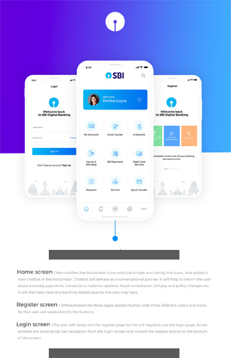

修改
修改-
- 总览
- 具体岗位
- 工作场景
- 职业内涵
- 职业标准
- 职业素质
- 职业体验
- 职业产业
- 职业分类
- 专业课程
- 职业培训
总览
平均薪酬 最高薪酬 10-15k 30k - 具体岗位
- 工作场景
- 职业内涵
- 职业标准
- 职业素质
- 职业体验
- 职业产业
- 职业分类
- 专业课程
- 职业培训
工作场景
职业内涵
UI设计——将组织内所有的成员都作为一种可开大的资源，通过科学的管理，以 求得以下三方面的和谐：
①求得人与事的最佳配合，使事得其人，人尽其才；
②求得人与人之间的协调合作，发挥团队力量，同进步，共发展；
③求得人人能胜任本职工作，发挥其潜力，做出最大的贡献职业标准
UI总监⒈具有本科学历（含同等学历），经本职业人力资管理员正规培训达到规定标准学时数，并取得毕（结）业证书；
UI设计主管
⒉具有大专学历（含同等学历），连续从事本职业工作2年以上。⒈取得本职业人力资源管理员职业资格证书后，连续从事本职业工作2年以上，经本职业助理人力资源管理师正规培训达到规定标准学时数，并取得毕（结）业证书；
UI设计师
⒉具有大学本科学历（含同等学历），连续从事本职业工作1年以上，经本职业助理人力资源管理师正规培训达到规定标准学时数，并取得毕（结）业证书；
⒊取得本专业或相关专业硕士学位，经本职业助理人力资源管理师正规培训达到规定标准学时数，并取得毕（结）业证书；
⒋具备本专业或相关专业大学专科学历，连续从事本职业工作3年以上。⒈取得本职业助理人力资源管理师职业资格证书后，连续从事本职业工作3年以上，经本职业人力资源管理师正规培训达到规定标准学时数，并取得毕（结）业证书；
UI设计助理
⒉取得本专业或相关专业博士学位；
⒊具有本专业或相关专业硕士学位，连续从事本职业3年以上；
⒋具有本专业或相关专业学士学位，连续从事本职业工作6年以上；
⒌具有大专学历，连续从事本职业工作8年以上；
⒍具有高中、中专学历，连续从事本职业工作10年以上；⒈取得本职业人力资源管理师职业资格证书后，连续从事本职业工作3年以上，经本职业高级人力资源管理师正规培训达到规定标准学时数，并取得毕（结）业证书者；
UI设计实习生
⒉具有本专业或相关专业博士学位，连续从事本职业工作2年以上。⒈取得本职业人力资源管理师职业资格证书后，连续从事本职业工作3年以上，经本职业高级人力资源管理师正规培训达到规定标准学时数，并取得毕（结）业证书者；
⒉具有本专业或相关专业博士学位，连续从事本职业工作2年以上。职业素质
一、人才市场属于人力资源服务行业；
二、人力资源服务行业还包括：
1、各个地区的人才中介所（面对零散的流动人员）；
2、各工业区与地区的劳务市场（针对密集劳动型的企业）；
3、人才招聘网站（如南方人才市场、前程无忧等大小型网站）；
4、人力资源管理公司或企业管理咨询有限公司（针对人才培训与职场培训）；
5、各大中院校或机构的人力资源培训中心（人才理论培训考证如：人力资源师证、MBA等）
6、人才市场（综合性的机构，一般包括培训、网站、考证与一体的，并且取得政府机构支持与合作的）
7、人力资源公司（包含了人才派遣机构和劳务派遣机构）
8、企业管理咨询公司（包含人力资源培训与人才推荐服务）职业产业
1、学习能力。
人力资源管理在我国起步较晚，现有的人力资源管理者大多缺乏专业背景，这尤其需要人力资源管理者树立终身学习理念，培养终身学习能力，通过学习系统把握国家的政策法规，掌握心理学、经济学、管理学及人际关系学知识，提升自己的专业管理水平。
2、创新能力。
“创新是管理的生命力”。而我国一些企业，尤其是国企的人力资源管理者由于传统文化环境，已经习惯于机械被动地处理例行的日常事务。这种状态远远不能适应当今的人力资源工作要求。时代趋势要求人力资源管理者在吸纳、留住、开发、激励人才上不断创新。
3、育人能力。
组织竞争能力来源于员工能力的开发，人力资源管理者要善于培育人才，通过为员工设置职业发展通道，提供施展才能的舞台以及培训和发展机会，充分挖掘员工潜能，调动员工内在积极性，促进企业目标的实现。
4、影响力。
人力资源管理者作为人力资源产品和服务的提供者，必须具备影响力。这种影响力主要表现在与员工建立彼此信任并达成共识的基础上成为员工的“利益代言人”，同时成为人力资源管理领域的专家，依赖专业权威性影响推动企业变革，发挥人力资源管理对企业运营实践的支持作用。
5、沟通能力。
管理中的70%的错误是由于不善于沟通造成的。作为人力资源管理者来说，归根结底是做人的工作，沟通更是一门必修课，人力资源管理者要不断增强人际沟通的本领，包括口头表达能力、书面写作能力、演讲能力、倾听能力以及谈判的技巧等。
6、协调能力。
只有协调才能取得行动的一致。人力资源管理部门同组织内所有其他部门有着密切的关系，人力资源管理者必须具备良好的协调能力，指导和帮助其他部门的经理做好人力资源管理工作。同时还要善于协调人力资源部门内部关系，使人力资源部成为一个富有战斗力的团队。
7、信息能力。
信息对人力资源管理十分关键，无论是人力资源招聘、绩效考核还是薪酬管理都需要来自政府人事法规政策、人才市场行情、行业动态、客户态度、员工满意度等方方面面的信息。只有拥有准确、丰富的信息并对信息进行仔细的分析，才能形成各项正确的人力资源管理决策。所以人力资源管理者要养成强烈的信息意识，提高信息感受力。职业分类
UI设计分为三个等级：
1、助理UI设计师
2、初级UI设计师
3、高级UI设计师专业课程
设计的三大构成、素描基础、色彩理论、PS、AI、Axure职业培训
培训与开发、绩效管理、薪酬与福利管理、劳动关系管理、劳动经济学、劳动法、现代企业管理、组织行为 -
- 总览
- 游戏UI
- 电商UI
- 网站UI
- 移动端UI
游戏UI是什么？
这是不同的三个分工。UI主要是做游戏操作界面设计的，角色和场景才是真正的游戏美术设计。角色和场景的特点又分别如下：角色顾名思义就是游戏中的人物、动物等活物，场景则是游戏中的环境、机械、道具等死物。从学习的角度来说，角色的起点要求比较高，要求有比较好的美术基础，对人体结构有娴熟的了解，当然还要会用3D软件；场景开始对美术的要求没有那么高，只要熟练运用3D软件就行了。但是角色是越学越容易的，场景刚好相反是学无止尽的。
游戏UI在行业中的需求？
随着时代的发展，游戏UI设计师一直是游戏美术研发中的岗位。游戏UI设计师在过去都是划分到美术部门，2010年之前的端游时代，当时国内自主研发产品不多，而且开发周期长，一个项目基本就1个UI设计师即可。全国上下没有多少位，所以这个岗位一直不被大家所熟知也是很正常的。后期页游与手游的爆发，国内研发真正走上黄金时代，对游戏UI设计师的大规模需求，漫天的招聘，让这个岗位真正从幕后走到前台，让大家所了解与好奇。由于是一个人数较少的岗位，那么在美术高校也不会为此开设相关专业。专业书籍主要是由教师编辑的，因为高校没有专业的老师，这也能解释为什么没有专业书籍的出现了电商UI是什么？
这是不同的三个分工。UI主要是做游戏操作界面设计的，角色和场景才是真正的游戏美术设计。角色和场景的特点又分别如下：角色顾名思义就是游戏中的人物、动物等活物，场景则是游戏中的环境、机械、道具等死物。从学习的角度来说，角色的起点要求比较高，要求有比较好的美术基础，对人体结构有娴熟的了解，当然还要会用3D软件；场景开始对美术的要求没有那么高，只要熟练运用3D软件就行了。但是角色是越学越容易的，场景刚好相反是学无止尽的。
电商UI在行业中的需求？
电商事人们家喻户晓的的一个名词，双十一也成为我们饭后的一个重要话题，电商UI发展至今已经成为一个很重要的职业。
网站UI是什么？
网站UI主要负责pc端页面优化，事提升用户体验的一个重要环节，网站UI主要负责pc端页面优化，事提升用户体验的一个重要环节网站UI主要负责pc端页面优化，事提升用户体验的一个重要环节网站UI主要负责pc端页面优化，事提升用户体验的一个重要环节网站UI主要负责pc端页面优化，事提升用户体验的一个重要环节网站UI主要负责pc端页面优化，事提升用户体验的一个重要环节网站UI主要负责pc端页面优化，事提升用户体验的一个重要环节网站UI主要负责pc端页面优化，事提升用户体验的一个重要环节网站UI主要负责pc端页面优化，事提升用户体验的一个重要环节网站UI在行业中的需求？
网站UI在互联网时代扮演重要的角色，网站UI在互联网时代扮演重要的角色，网站UI在互联网时代扮演重要的角色，网站UI在互联网时代扮演重要的角色，网站UI在互联网时代扮演重要的角色，网站UI在互联网时代扮演重要的角色。移动端UI是什么？
移动端UI主要负责pc端页面优化，事提升用户体验的一个重要环节，网站UI主要负责pc端页面优化，事提升用户体验的一个重要环节网站UI主要负责pc端页面优化，事提升用户体验的一个重要环节网站UI主要负责pc端页面优化，事提升用户体验的一个重要环节网站UI主要负责pc端页面优化，事提升用户体验的一个重要环节网站UI主要负责pc端页面优化，事提升用户体验的一个重要环节网站UI主要负责pc端页面优化，事提升用户体验的一个重要环节网站UI主要负责pc端页面优化，事提升用户体验的一个重要环节网站UI主要负责pc端页面优化，事提升用户体验的一个重要环节移动端UI在行业中的需求？
移动端UI在互联网时代扮演重要的角色，移动端UI在互联网时代扮演重要的角色，移动端UI在互联网时代扮演重要的角色，移动端UI在互联网时代扮演重要的角色，移动端UI在互联网时代扮演重要的角色，移动端UI在互联网时代扮演重要的角色。 -
-
没有 UI 就是新的 UI
人人都是产品经理2小时前几个月之前，我曾经在一篇文章中说过 Magic 和 Operator 这样的应用将会成为下一个重大突破。它们的独特之处在于，它们没有采用传统的 UI（用户界面）作为交互方式。相反，这些应用是完全围绕单个消息对话屏幕展开的。
-
视错觉与 UI 元素间的可能
人人都是产品经理2小时前几个月之前，我曾经在一篇文章中说过 Magic 和 Operator 这样的应用将会成为下一个重大突破。它们的独特之处在于，它们没有采用传统的 UI（用户界面）作为交互方式。相反，这些应用是完全围绕单个消息对话屏幕展开的。
-
UI 设计有哪些规范？
人人都是产品经理2小时前几个月之前，我曾经在一篇文章中说过 Magic 和 Operator 这样的应用将会成为下一个重大突破。它们的独特之处在于，它们没有采用传统的 UI（用户界面）作为交互方式。相反，这些应用是完全围绕单个消息对话屏幕展开的。
-
没有 UI 就是新的 UI
人人都是产品经理2小时前几个月之前，我曾经在一篇文章中说过 Magic 和 Operator 这样的应用将会成为下一个重大突破。它们的独特之处在于，它们没有采用传统的 UI（用户界面）作为交互方式。相反，这些应用是完全围绕单个消息对话屏幕展开的。
-
视错觉与 UI 元素间的可能
人人都是产品经理2小时前几个月之前，我曾经在一篇文章中说过 Magic 和 Operator 这样的应用将会成为下一个重大突破。它们的独特之处在于，它们没有采用传统的 UI（用户界面）作为交互方式。相反，这些应用是完全围绕单个消息对话屏幕展开的。
-
UI 设计有哪些规范？
人人都是产品经理2小时前几个月之前，我曾经在一篇文章中说过 Magic 和 Operator 这样的应用将会成为下一个重大突破。它们的独特之处在于，它们没有采用传统的 UI（用户界面）作为交互方式。相反，这些应用是完全围绕单个消息对话屏幕展开的。
-
-
-
中华人民共和国劳动合同法
《全国人民代表大会常务委员会关于修改〈中华人民共和国劳动合同法〉的决定》已由中华人民共和国第十一届全国人民代表大会常务委员会第三十次会议于2012年12月28日通过，现予公布，自2013年7月1日起施现予公布，自2013年7月1日起施现予公布，自2013年7月1日起施自2013年7月1日起施行...
-
中华人民共和国国家勋章和国家荣誉称号法
《中华人民共和国国家勋章和国家荣誉称号法》已由中华人民共和国第十二届全国人民代表大会常务委员会第十八次会议于2015年12月27日通过，现予公布，自2016年1月1日起施。
-
中华人民共和国军人保险法
１９９２年４月３日第七届全国人民代表大会第五次会议通过,根据２００１年１０月２７日第九届全国人民代表大会常务委员会第二十四次会《关于修改〈中华人民共和国工会法〉的决定》修正代表大会常务委员会第二十四代表大会常务委员会第二十四代表大会常务委员会第二十务委员会第二十四...
-
中华人民共和国工会法
《中华人民共和国国家勋章和国家荣誉称号法》已由中华人民共和国第十二届全国人民代表大会常务委员会第十八次会议于2015年12月27日通过，现予公布，自2016年1月1日起施行
-
中华人民共和国劳动合同法
《全国人民代表大会常务委员会关于修改〈中华人民共和国劳动合同法〉的决定》已由中华人民共和国第十一届全国人民代表大会常务委员会第三十次会议于2012年12月28日通过，现予公布，自2013年7月1日起施现予公布，自2013年7月1日起施现予公布，自2013年7月1日起施自2013年7月1日起施行...
-
中华人民共和国工会法
《中华人民共和国国家勋章和国家荣誉称号法》已由中华人民共和国第十二届全国人民代表大会常务委员会第十八次会议于2015年12月27日通过，现予公布，自2016年1月1日起施行
-
-
地图展示 热力图展示 人员迁徙图展示 人员分配图展示 基本数据展示选择地区选择岗位安徽:合肥宿州淮北阜阳蚌埠淮南滁州马鞍山芜湖铜陵安庆黄山六安巢湖池州宣城亳州河北:石家庄邯郸唐山保定秦皇岛邢台张家口承德沧州廊坊衡水河南:郑州开封洛阳平顶山安阳鹤壁新乡焦作濮阳许昌漯河三门峡南阳商丘周口驻马店信阳广东:广州深圳清远韶关河源梅州潮州汕头揭阳汕尾惠州东莞珠海中山江门佛山肇庆云浮阳江茂名湛江黑龙江:黑河大庆伊春鹤岗佳木斯双鸭山七台河鸡西牡丹江绥化双城尚志五常阿城讷河北安五大铁力同江富锦虎林密山绥芬河海林宁安安达肇东海伦湖北省:武汉十堰襄樊荆门孝感黄冈鄂州黄石咸宁荆州宜昌随州仙桃天门潜江丹江口老河口枣阳宜城钟祥汉川应城安陆广水麻城武穴大冶赤壁石首洪湖松滋宜都枝江当阳恩施利川湖南:长沙张家界常德益阳岳阳株洲湘潭衡阳郴州永州邵阳怀化娄底浏阳津市沅江汨罗临湘醴陵湘乡韶山耒阳常宁资兴武冈洪江冷水江涟源吉首吉林:长春吉林市白城松原四平辽源通化白山德惠九台榆树磐石蛟河桦甸舒兰洮南大安双辽公主岭梅河口集安临江延吉图们敦化珲春龙井和龙湖北省:武汉十堰襄樊荆门孝感黄冈鄂州黄石咸宁荆州宜昌随州仙桃天门潜江丹江口老河口枣阳宜城钟祥汉川应城安陆广水麻城武穴大冶赤壁石首洪湖松滋宜都枝江当阳恩施利川湖南:长沙张家界常德益阳岳阳株洲湘潭衡阳郴州永州邵阳怀化娄底浏阳津市沅江汨罗临湘醴陵湘乡韶山耒阳常宁资兴武冈洪江冷水江涟源吉首吉林:长春吉林市白城松原四平辽源通化白山德惠九台榆树磐石蛟河桦甸舒兰洮南大安双辽公主岭梅河口集安临江延吉图们敦化珲春龙井和龙暂时查询不到数据